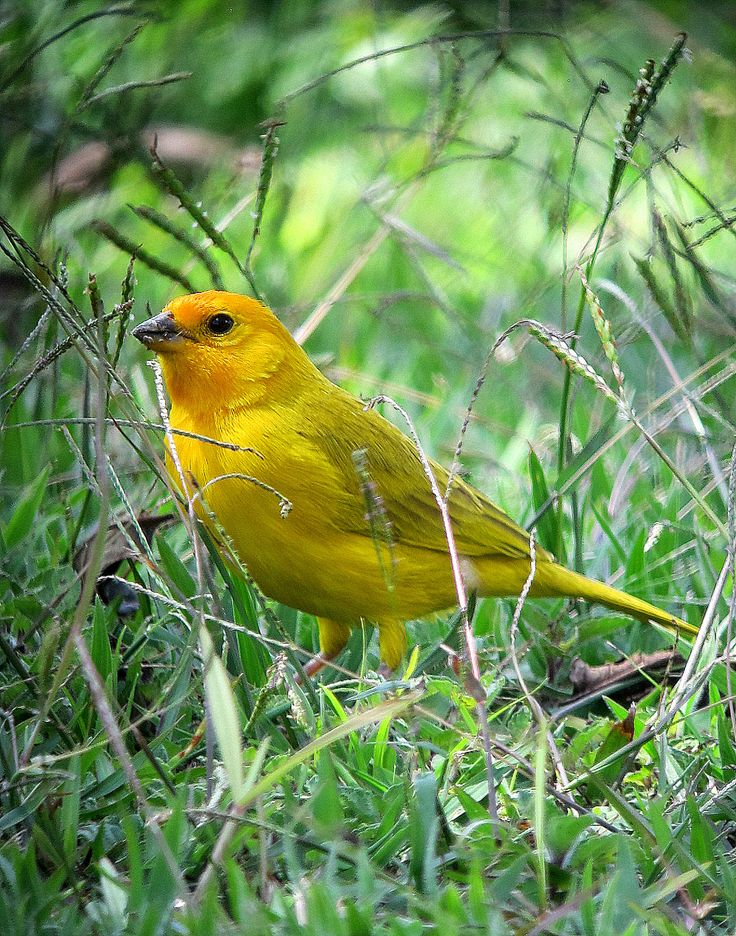

🌾 Hábitat
El canario coronado habita principalmente en los bosques secos tropicales de América del Sur, desde Colombia hasta Argentina...

🌻 Alimentación
Su dieta es principalmente granívora...

🌞 Adaptaciones al hábitat
El canario coronado posee un plumaje que refleja los tonos del sol...

💛 Dismorfismo Sexual
El canario coronado presenta un marcado dismorfismo sexual, es decir, diferencias físicas evidentes entre el macho y la hembra:
- Macho: posee un plumaje amarillo brillante con una corona anaranjada o dorada muy visible, especialmente bajo la luz solar.
- Hembra: presenta tonalidades más suaves, amarillentas o verdosas, lo que le permite camuflarse mejor entre la vegetación seca.
- Durante la época de reproducción, los machos intensifican su color y su canto para atraer a las hembras.

🦅 Depredadores
Entre sus principales enemigos naturales están los halcones, serpientes y pequeños mamíferos...

🎶 Canto
Su canto es melodioso, vibrante y alegre...

🕊️ Explora el Canario Coronado
Haz clic en las partes del canario para descubrir datos curiosos:

✨ Haz clic en una parte del canario para descubrir un dato curioso ✨
🌿 Datos Curiosos
- El macho canta con mayor intensidad...
- Su color amarillo proviene de los pigmentos...
- Construye su nido con pasto seco...
- En algunos países se asocia con la buena suerte...
- Pueden vivir entre 8 y 10 años en libertad.
🌎 Conservación y Amenazas
Aunque el canario coronado no se considera en peligro...